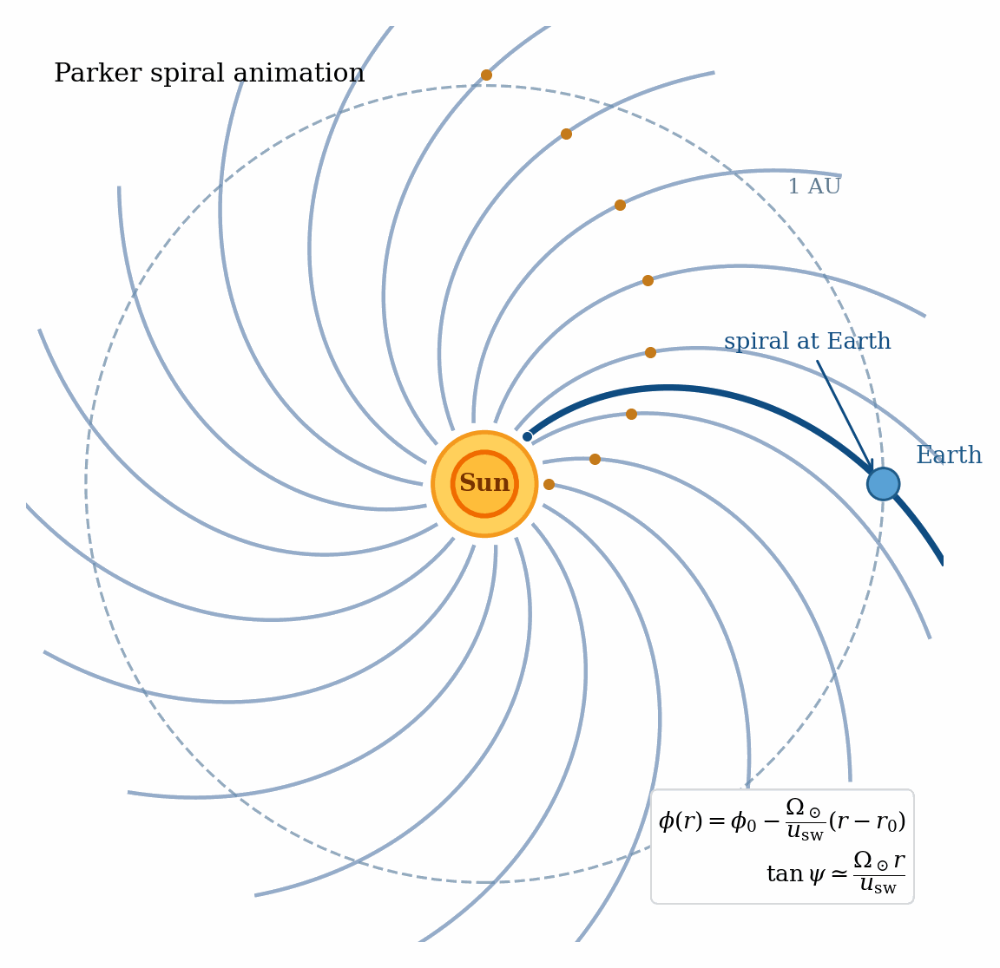

Lecture 8
The Solar Wind and Parker Spiral: Dynamic Equilibrium
Overview
Why this lecture matters. The solar wind is one of the cleanest examples of a global MHD
equilibrium that is not static. This lecture has four jobs:
-
1.
- show why a sufficiently hot corona cannot remain hydrostatic;
-
2.
- derive Parker’s transonic wind carefully enough that the critical-point logic is
unmistakable;
-
3.
- extend the outflow to a rotating, magnetized wind and derive the Parker spiral; and
-
4.
- connect the astrophysical picture back to laboratory experiments that reproduce the
same field-line geometry and current-sheet physics.
The heliosphere is not a static atmosphere surrounding the Sun. It is a driven plasma system in which
thermal pressure, gravity, magnetic tension, and rotation organize a continuous outflow over astronomical
distances. In that sense the solar wind is an ideal lecture for these notes: the mathematics is compact,
the physics is global, and the payoff is visible everywhere from space-weather measurements
near Earth to laboratory Parker-spiral experiments Parker [1958], Fox et al. [2016], Peterson
et al. [2019].
Historical Perspective
Parker’s 1958 insight was radical in exactly the right way: if the corona is hot enough, one
should stop forcing a static atmosphere onto it and instead solve for a steady outflow that
passes through a sonic critical point Parker [1958]. Once the Sun’s rotation and magnetic
field are added, the same outflow naturally winds the field into the Archimedean spiral
now called the Parker spiral. The idea was so influential because it explained several
solar-system-scale observations at once: a persistent outflow, an interplanetary magnetic
field, and a global magnetic geometry shaped by rotation.
8.1 Why a hot corona cannot stay hydrostatic
Before solving for the wind, it is worth seeing why a globally hydrostatic corona fails. Take the momentum
equation (1.8) with \[ \uvec = 0, \qquad \J \times \B \approx 0, \qquad \vect {g} = -\frac {GM_\odot }{r^2}\,\vect {e}_r, \] and assume an isothermal equation of state \[ P = c_s^2 \rho , \qquad c_s^2 = \frac {k_B T}{m} = \text {const}. \] Then hydrostatic balance gives
\[\dd {P}{r} = -\rho \frac {GM_\odot }{r^2}. \tag{8.1}\]
Substituting \(P=c_s^2\rho \) into (8.1) yields \[c_s^2\dd {\rho }{r} = -\rho \frac {GM_\odot }{r^2}, \qquad \frac {1}{\rho }\dd {\rho }{r} = -\frac {GM_\odot }{c_s^2 r^2}. \tag{8.2}\]
Integrating from the coronal base \(R_\odot \) to radius \(r\), \[\int _{\rho (R_\odot )}^{\rho (r)} \frac {d\rho '}{\rho '} = -\frac {GM_\odot }{c_s^2} \int _{R_\odot }^{r} \frac {dr'}{r'^2},\]
so \[\ln \!\left [\frac {\rho (r)}{\rho (R_\odot )}\right ] = \frac {GM_\odot }{c_s^2} \left ( \frac {1}{r}-\frac {1}{R_\odot } \right ),\]
and therefore \[\boxed { \rho (r)=\rho (R_\odot ) \exp \!\left [ \frac {GM_\odot }{c_s^2} \left ( \frac {1}{r}-\frac {1}{R_\odot } \right ) \right ]. } \tag{8.5}\]
As \(r\to \infty \), the exponential tends to a nonzero constant, \[\rho (\infty )=\rho (R_\odot ) \exp \!\left (-\frac {GM_\odot }{c_s^2R_\odot }\right ) \neq 0. \tag{8.6}\]
So an isothermal hydrostatic corona does not relax toward vacuum at infinity; it approaches a finite
density and therefore demands a finite confining pressure at arbitrarily large radius. Parker’s point was
that this is not a pathology of the algebra. It is the algebra telling us that a sufficiently hot corona must
expand.
Caution
Do not confuse equilibrium with stasis. The solar wind is a steady solution, but
not a static one. In a dynamic equilibrium, \[ \pp {}{t}=0, \qquad (\uvec \cdot \grad )\uvec \neq 0, \] so conserved fluxes balance forces along
streamlines even while the plasma accelerates.
8.2 Hydrodynamic Parker wind
We now solve the steady, spherically symmetric outflow problem.
Assumptions
- steady state: \(\pp {}{t}=0\);
- spherical symmetry;
- purely radial flow: \(\uvec = u_r(r)\,\vect {e}_r\);
- central gravity: \(\Phi = -GM_\odot /r\);
- isotropic pressure, first taken to be isothermal: \(P=c_s^2\rho \).
The isothermal closure is not the only choice. The conservative energy equation derived earlier can also be
reduced to an adiabatic or polytropic closure; see, for example, (3.11). But the isothermal
model keeps the critical-point structure completely transparent, so it is the standard first
derivation.
Continuity equation
Starting from mass conservation (1.7),
\[\divergence (\rho \uvec )=0,\]
spherical symmetry gives \[\frac {1}{r^2}\dd {}{r}\left (r^2\rho u_r\right )=0.\]
Therefore \[\boxed { F_m \equiv r^2\rho u_r = \text {const} } \tag{8.9}\]
or, if one prefers to keep the full spherical area explicitly, \[\dot M_\odot = 4\pi r^2\rho u_r = 4\pi F_m. \tag{8.10}\]
Taking the logarithmic derivative of (8.9), \[\dd {}{r}\ln (r^2\rho u_r)=0,\]
so \[\frac {1}{\rho }\dd {\rho }{r} + \frac {1}{u_r}\dd {u_r}{r} + \frac {2}{r} =0.\]
Hence \[\boxed { \frac {1}{\rho }\dd {\rho }{r} = -\frac {1}{u_r}\dd {u_r}{r} -\frac {2}{r}. } \tag{8.13}\]
Radial momentum equation
With no magnetic force yet included, the radial component of (1.8) is
\[\rho u_r\dd {u_r}{r} = -\dd {P}{r} - \rho \frac {GM_\odot }{r^2}. \tag{8.14}\]
For an isothermal gas, \[P=c_s^2\rho , \qquad \dd {P}{r}=c_s^2\dd {\rho }{r}.\]
Dividing (8.14) by \(\rho \) gives \[u_r\dd {u_r}{r} = -c_s^2\frac {1}{\rho }\dd {\rho }{r} - \frac {GM_\odot }{r^2}.\]
Now substitute (8.13): \[\begin{aligned}u_r\dd {u_r}{r} &= -c_s^2 \left ( -\frac {1}{u_r}\dd {u_r}{r}-\frac {2}{r} \right ) - \frac {GM_\odot }{r^2} \\[0.4em] &= \frac {c_s^2}{u_r}\dd {u_r}{r} + \frac {2c_s^2}{r} - \frac {GM_\odot }{r^2}.\end{aligned}\]
Move the derivative terms to the left:
\[\left ( u_r-\frac {c_s^2}{u_r}\right )\dd {u_r}{r} = \frac {2c_s^2}{r} - \frac {GM_\odot }{r^2}.\]
Multiplying by \(u_r\) gives the standard Parker equation, \[\boxed { \left (u_r^2-c_s^2\right ) \frac {1}{u_r}\dd {u_r}{r} = \frac {2c_s^2}{r} - \frac {GM_\odot }{r^2}. } \tag{8.20}\]
This is the key differential equation of the hydrodynamic wind.
Dimensionless form and integral curve
Define the sonic radius
\[r_c = \frac {GM_\odot }{2c_s^2}, \tag{8.21}\]
and dimensionless variables \[v=\frac {u_r}{c_s}, \qquad x=\frac {r}{r_c}. \tag{8.22}\]
Then (8.20) becomes \[\boxed { \left (v^2-1\right )\frac {1}{v}\dd {v}{x} = \frac {2}{x}-\frac {2}{x^2}. } \tag{8.23}\]
Now separate variables: \[\left (v-\frac {1}{v}\right )dv = \left (\frac {2}{x}-\frac {2}{x^2}\right )dx.\]
Integrating both sides, \[\int \left (v-\frac {1}{v}\right )dv = \int \left (\frac {2}{x}-\frac {2}{x^2}\right )dx,\]
gives \[\frac {v^2}{2}-\ln v = 2\ln x+\frac {2}{x}+C_1.\]
Multiplying by \(2\) and absorbing constants, \[\boxed { v^2-\ln v^2 = 4\ln x+\frac {4}{x}+C. } \tag{8.27}\]
This implicit formula contains an entire one-parameter family of steady solutions. The physics lies in
deciding which branch is admissible.
Critical point and transonic selection
At the radius \(r=r_c\), the right-hand side of (8.20) vanishes. For the derivative to remain finite, the left-hand side
must vanish as well, so the smooth solution must satisfy
\[u_r(r_c)=c_s. \tag{8.28}\]
Equivalently, in dimensionless variables the critical point is \[x=1, \qquad v=1. \tag{8.29}\]
Substituting (8.29) into (8.27) determines the integration constant for the transonic Parker solution:
\[1-\ln 1 = 4\ln 1 + 4 + C \qquad \Longrightarrow \qquad C=-3. \tag{8.30}\]
Thus the physical transonic branch is \[\boxed { v^2-\ln v^2 = 4\ln x+\frac {4}{x}-3. } \tag{8.31}\]
It is also useful to know the slope at the sonic point. Set
\[x=1+\epsilon , \qquad v=1+\alpha \epsilon , \qquad |\epsilon |\ll 1. \tag{8.32}\]
Then \[v^2-1 \simeq 2\alpha \epsilon , \qquad \frac {1}{v}\frac {dv}{dx} \simeq \alpha ,\]
so the left-hand side of (8.23) is approximately \[\left (v^2-1\right )\frac {1}{v}\frac {dv}{dx} \simeq 2\alpha ^2\epsilon .\]
Meanwhile the right-hand side is \[\begin{aligned}\frac {2}{x}-\frac {2}{x^2} &= \frac {2}{1+\epsilon }-\frac {2}{(1+\epsilon )^2} \nonumber \\ &\simeq 2(1-\epsilon )-2(1-2\epsilon ) \nonumber \\ &\simeq 2\epsilon .\end{aligned}\]
Therefore
\[2\alpha ^2\epsilon = 2\epsilon \qquad \Longrightarrow \qquad \alpha =\pm 1. \tag{8.36}\]
The \(\alpha =+1\) branch is the accelerating solar wind; the \(\alpha =-1\) branch is the accretion-like branch.
Why the other steady branches fail
The transonic solution is not just elegant; it is the only steady branch that connects sensible inner and
outer boundary conditions.
Breeze branch.
For a purely subsonic branch, \(v\ll 1\) at large \(x\), and (8.27) becomes
\[-\ln v^2 \sim 4\ln x, \qquad v\sim x^{-2} \qquad (x\to \infty ). \tag{8.37}\]
Using mass conservation (8.9), \[\rho = \frac {F_m}{u_r r^2} = \frac {F_m}{c_s v r_c^2 x^2}.\]
Since \(v\sim x^{-2}\), the factor \(v x^2\) tends to a constant, and therefore \[\rho \to \text {constant} \qquad (r\to \infty ). \tag{8.39}\]
So the breeze solution again requires a finite confining pressure at infinity. It cannot match empty
interplanetary space.
Supersonic branch from the base.
A purely supersonic solution would require the flow to start above the sound speed at the coronal base,
which is inconsistent with the expected low-altitude boundary conditions.
Large-radius transonic asymptotic.
For the Parker branch itself, \(v\gg 1\) at large \(x\), so (8.31) gives
\[v^2 \sim 4\ln x, \qquad u_r \sim 2c_s\sqrt {\ln \left (\frac {r}{r_c}\right )}. \tag{8.40}\]
The isothermal solution therefore accelerates only logarithmically at large \(r\), but it does remain
supersonic.
Remark on polytropic flow.
The isothermal model is the cleanest analytic benchmark. If instead one uses the adiabatic or polytropic
pressure law discussed in (3.11), the sound speed varies with radius and the algebra is less tidy, but
the core lesson survives: a smooth transonic solution is again selected by the critical-point
condition.
8.3 Magnetized rotating wind: the Weber–Davis invariants
Parker’s classic solar-wind solution shows that a hot corona drives a transonic radial outflow
and that a frozen-in solar magnetic field is wound into an increasingly spiral geometry by
solar rotation [Parker, 1958]. In the steady, axisymmetric, ideal-MHD refinement of Weber &
Davis [Weber and Davis, 1967], the equatorial wind is organized by first integrals along a
streamline/field line: \(\rho u_r r^2=\mathrm {const}\) and \(B_r r^2=\mathrm {const}\), so the mass loading \(\kappa \equiv \rho u_r/B_r\) is constant; the induction equation gives the field-line
angular velocity \(\Omega _F \equiv r^{-1}(u_\phi -u_r B_\phi /B_r)\) (equal to the solar rotation rate in the original Weber–Davis model); the
azimuthal momentum equation gives the total specific angular momentum \(L \equiv r\!\left (u_\phi -\frac {B_r B_\phi }{4\pi \rho u_r}\right )=r\!\left (u_\phi -\frac {B_\phi }{4\pi \kappa }\right )\); and integrating
the radial equation gives a Bernoulli constant \(E \equiv \tfrac 12(u_r^2+u_\phi ^2)+h-\frac {GM_\odot }{r}-\Omega _F r \frac {B_\phi }{4\pi \kappa }\), with \(h=\int dp/\rho \) or \(h=\gamma p/[(\gamma -1)\rho ]\) for a polytrope. Regularity at the
Alfvén point then yields the classic lever-arm relation \(L=\Omega _F r_A^2\), which makes explicit how the magnetic
field enforces near-corotation close to the Sun while extracting angular momentum from the
wind.
We now restore magnetic field and rotation. The resulting model is still highly idealized, but it is enough
to generate the Parker spiral and the magnetic braking torque.
Additional assumptions.
- ideal MHD, so the electric field satisfies (4.8),
- steady state and axisymmetry,
- equatorial-plane reduction with \(u_\theta =B_\theta =0\),
- the radial speed \(u_r(r)\) is supplied by the Parker solution to leading order,
- the open magnetic flux is approximated as a split-monopole field in the far zone, so \(B_r\propto r^{-2}\).
Mass flux and open magnetic flux
Continuity still gives
\[\rho u_r r^2 = K = \frac {\dot M_\odot }{4\pi }. \tag{8.41}\]
The divergence-free condition (1.12) gives, for a purely radial field, \[\frac {1}{r^2}\dd {}{r}\left (r^2 B_r\right )=0 \qquad \Longrightarrow \qquad r^2 B_r = \Phi = \text {const}. \tag{8.42}\]
Thus both the mass flux and the open magnetic flux are constants of the flow.
Azimuthal momentum and total angular momentum
Take the \(\phi \) component of the steady momentum equation (1.8). In the present geometry,
\[\rho \left ( u_r\dd {u_\phi }{r}+\frac {u_r u_\phi }{r} \right ) = \frac {1}{\muo }\left ( B_r\dd {B_\phi }{r}+\frac {B_r B_\phi }{r} \right ). \tag{8.43}\]
Both sides can be written as total derivatives: \[\rho u_r\frac {1}{r}\dd {}{r}(r u_\phi ) = \frac {B_r}{\muo r}\dd {}{r}(r B_\phi ). \tag{8.44}\]
Now multiply by \(r^3\) and use (8.41) and (8.42): \[(\rho u_r r^2)\dd {}{r}(r u_\phi ) = \frac {(B_r r^2)}{\muo }\dd {}{r}(r B_\phi ),\]
so \[K\dd {}{r}(r u_\phi ) = \frac {\Phi }{\muo }\dd {}{r}(r B_\phi ). \tag{8.46}\]
Integrating once gives \[K r u_\phi - \frac {\Phi }{\muo } r B_\phi = K L, \tag{8.47}\]
where \(L\) is a constant. Dividing by \(K\) and re-expressing \(\Phi /K=B_r/(\rho u_r)\) yields \[\boxed { r\left ( u_\phi - \frac {B_r B_\phi }{\muo \rho u_r} \right )=L. } \tag{8.48}\]
This is the specific total angular momentum: the first term is the matter contribution and the second is the
magnetic-stress contribution.
Induction equation and corotation invariant
The ideal Ohm law is
\[\E +\uvec \times \B =0. \tag{8.49}\]
In the present geometry, the only nontrivial component is the polar one, \[E_\theta = -(u_\phi B_r-u_r B_\phi ). \tag{8.50}\]
Because the state is steady and axisymmetric, Faraday’s law (1.10) implies \(\grad \times \E =0\), which in this reduced
geometry means \[\dd {}{r}(rE_\theta )=0. \tag{8.51}\]
Therefore \[r(u_r B_\phi -u_\phi B_r)=C_\Omega , \tag{8.52}\]
where \(C_\Omega \) is another constant. Evaluate it at the coronal base, where the field line is anchored to the rotating
Sun and \(B_\phi (R_\odot )\approx 0\): \[C_\Omega = -R_\odot u_\phi (R_\odot ) B_r(R_\odot ) = -\Omega _\odot R_\odot ^2 B_r(R_\odot ).\]
Since \(R_\odot ^2 B_r(R_\odot )=\Phi \), we obtain \[C_\Omega =-\Omega _\odot \Phi . \tag{8.54}\]
Substituting (8.42) then gives \[\boxed { u_\phi -\frac {u_r B_\phi }{B_r}=\Omega _\odot r. } \tag{8.55}\]
Equation (8.55) is the statement that the field line carries the rotation of its footpoint.
Solve for \(u_\phi \) and \(B_\phi \)
Define the radial Alfvén Mach number
\[M_A^2 \equiv \frac {\muo \rho u_r^2}{B_r^2}. \tag{8.56}\]
Also write \[q\equiv \frac {B_\phi }{B_r}. \tag{8.57}\]
Then (8.48) and (8.55) become \[\begin{aligned}u_\phi - \frac {u_r q}{M_A^2} &= \frac {L}{r}, \\ u_\phi - u_r q &= \Omega _\odot r.\end{aligned} \tag{8.58}\]
Subtract (8.59) from (8.58):
\[u_r q\left (1-\frac {1}{M_A^2}\right )=\frac {L}{r}-\Omega _\odot r. \tag{8.60}\]
Hence \[q = \frac {1}{u_r} \frac {M_A^2}{M_A^2-1} \left ( \frac {L}{r}-\Omega _\odot r \right ), \tag{8.61}\]
and therefore \[B_\phi = \frac {B_r}{u_r} \frac {M_A^2}{M_A^2-1} \left ( \frac {L}{r}-\Omega _\odot r \right ). \tag{8.62}\]
Insert (8.61) into (8.59): \[\begin{aligned}u_\phi &= \Omega _\odot r + \frac {M_A^2}{M_A^2-1} \left ( \frac {L}{r}-\Omega _\odot r \right ) \\ &= \frac {M_A^2 L/r - \Omega _\odot r}{M_A^2-1}.\end{aligned} \tag{8.64}\]
Parker Spiral Animation
Watch for how steady radial outflow and solar rotation combine to wind the magnetic field into a trailing spiral, with the field at Earth sitting at an intermediate angle rather than remaining purely radial.

Animated geometry paired with the Parker-spiral derivation and the estimate of the spiral angle near 1 AU.
These
expressions appear singular when \(M_A=1\). The singularity is removed only if the numerators vanish at the same
radius. Define the Alfvén point by
\[u_r^2(r_A)=\frac {B_r^2(r_A)}{\muo \rho (r_A)} \qquad \Longleftrightarrow \qquad M_A(r_A)=1. \tag{8.65}\]
Regularity at \(r=r_A\) then requires \[\frac {L}{r_A}-\Omega _\odot r_A = 0 \qquad \Longrightarrow \qquad L=\Omega _\odot r_A^2. \tag{8.66}\]
Substitute (8.66) into (8.62) and (8.64): \[\boxed { B_\phi = -\frac {B_r\Omega _\odot r}{u_r} \left [ \frac {1-r_A^2/r^2}{M_A^2-1} \right ]M_A^2, } \tag{8.67}\]
\[\boxed { u_\phi = \Omega _\odot r \left [ \frac {M_A^2 r_A^2/r^2-1}{M_A^2-1} \right ]. } \tag{8.68}\]
These formulas make the physics transparent. Inside the Alfvén radius, \(M_A\ll 1\) and the magnetic field
enforces near-corotation, \(u_\phi \approx \Omega _\odot r\). Outside the Alfvén radius, \(M_A\gg 1\) and the plasma inertia dominates, giving
\[u_\phi \approx \frac {\Omega _\odot r_A^2}{r}, \qquad B_\phi \approx -\frac {\Omega _\odot r}{u_r}B_r. \tag{8.69}\]
Maxwell stress and solar spindown
The angular-momentum flux per unit solid angle is
\[\mathcal {F}_J = r^3\left (\rho u_r u_\phi - \frac {B_r B_\phi }{\muo }\right ). \tag{8.70}\]
Use (8.48) to rewrite this as \[\begin{aligned}\mathcal {F}_J &= \rho u_r r^2 \cdot r\left (u_\phi - \frac {B_r B_\phi }{\muo \rho u_r}\right ) \\ &= K L.\end{aligned} \tag{8.72}\]
Multiplying by \(4\pi \) gives the total torque,
\[\dot J = 4\pi \mathcal {F}_J = 4\pi K L = \dot M_\odot L. \tag{8.73}\]
Using (8.66), \[\boxed { \dot J = \dot M_\odot \,\Omega _\odot \,r_A^2. } \tag{8.74}\]
This is the standard magnetic-braking formula. The Alfvén radius acts as the effective lever arm: matter
leaves with modest azimuthal speed, but the magnetic field transmits the corotation torque out to \(r_A\) before
the gas fully decouples.
8.4 Parker spiral geometry
A magnetic field line is everywhere tangent to \(\B \), so in the equatorial plane
\[\frac {d\phi }{dr} = \frac {B_\phi }{rB_r}. \tag{8.75}\]
Far from the Sun, use (8.69): \[\frac {d\phi }{dr} \approx -\frac {\Omega _\odot }{u_r}. \tag{8.76}\]
If the wind speed has already saturated to an approximately constant value, integration is immediate:
\[\phi (r)-\phi (r_0) = -\frac {\Omega _\odot }{u_r}(r-r_0). \tag{8.77}\]
Equivalently, absorbing \(r_0\) into the integration constant, \[\boxed { \phi (r)=\phi _0-\frac {\Omega _\odot }{u_r}r. } \tag{8.78}\]
The field therefore forms an Archimedean spiral.
The angle \(\psi \) between the magnetic field and the radial direction obeys
\[\tan \psi = \frac {|B_\phi |}{B_r}. \tag{8.79}\]
Using the far-field result for \(B_\phi \), \[\boxed { \tan \psi \approx \frac {\Omega _\odot r}{u_r}. } \tag{8.80}\]
At Earth, with \(u_r\approx 400~\mathrm {km/s}\), \(\Omega _\odot \approx 2.7\times 10^{-6}~\mathrm {s}^{-1}\), and \(r=1~\mathrm {AU}\), one finds \(\tan \psi \approx 1\), so \(\psi \approx 45^\circ \). The interplanetary magnetic field at Earth is therefore neither
purely radial nor purely azimuthal; it typically sits at an intermediate spiral angle.
8.5 Experimental and observational perspective
The solar-wind lecture is a good place to remind ourselves that MHD is not separated into astrophysical
and laboratory silos. The Parker problem has now been explored in both settings.
On the observational side, the solar wind is the reason space plasma physics exists as a discipline: a
magnetized, supersonic plasma stream continuously bathes the planets, drives shocks and
current sheets, and communicates solar variability throughout the heliosphere. The Parker
Solar Probe mission was designed precisely to move the observational boundary condition
inward, toward the region where the wind is accelerated and the spiral field is established Fox
et al. [2016].
On the laboratory side, rotating magnetized plasma experiments have reproduced the same
qualitative ingredients: a central magnetized source, an outwardly accelerated plasma, and
a spiral magnetic geometry produced by frozen-in advection Peterson et al. [2019]. Those
experiments also produce current-sheet dynamics and plasmoid ejection in Parker-like geometries
Peterson et al. [2021]. This is exactly the kind of cross-scale connection that makes MHD so
powerful.
8.6 Outlook: when isotropic pressure is not enough
Everything above assumed a scalar pressure. That is the right place to start, but the real solar wind is only
weakly collisional over much of the heliosphere. In that regime the pressure need not remain isotropic, and
the later CGL/kinetic lectures become important.
A very simple scaling already shows why. In the collisionless double-adiabatic limit,
\[\frac {p_\perp }{\rho B}=\text {const}, \qquad \frac {p_\parallel B^2}{\rho ^3}=\text {const}. \tag{8.81}\]
For a nearly radial far-zone wind, \[B_r\propto r^{-2}, \qquad \rho u_r r^2=\text {const}. \tag{8.82}\]
If \(u_r\) is approximately constant once the wind is super-Alfvénic, then \(\rho \propto r^{-2}\) as well. Equation (8.81) then implies
\[p_\perp \propto \rho B \propto r^{-4}, \qquad p_\parallel \propto \frac {\rho ^3}{B^2} \propto r^{-2}. \tag{8.83}\]
Therefore \[\frac {p_\parallel }{p_\perp }\propto r^2. \tag{8.84}\]
So even if the pressure starts nearly isotropic near the Sun, radial expansion naturally drives anisotropy.
That is one reason the solar wind is such a fertile environment for mirror, firehose, and heat-flux physics
Hellinger et al. [2006], Bale et al. [2009].
Takeaways
- A hot corona cannot remain globally hydrostatic. The static isothermal solution
leaves a finite density at infinity, so expansion is unavoidable.
- The steady wind is selected by a critical-point condition. The smooth Parker branch
passes through \(u_r=c_s\) at \(r_c=GM_\odot /(2c_s^2)\) and is the only physically acceptable global solution.
- In ideal MHD, frozen-in flux and solar rotation produce two key invariants: total
specific angular momentum (8.48) and field-line corotation (8.55).
- The Alfvén radius is the magnetic lever arm. It sets both the Parker-spiral geometry
and the stellar torque \(\dot J=\dot M_\odot \Omega _\odot r_A^2\).
- The textbook Parker solution uses isotropic pressure, but heliospheric expansion
naturally drives pressure anisotropy, so the solar wind also serves as a gateway to
weakly collisional plasma physics.
Bibliography
E N Parker. Dynamics of the interplanetary gas and magnetic fields. The Astrophysical Journal,
128:664, 1958. doi:10.1086/146579.
N. J. Fox, M. C. Velli, S. D. Bale, R. Decker, A. Driesman, R. A. Howard, J. C. Kasper,
J. Kinnison, M. Kusterer, P. C. Liewer, D. J. McComas, A. Szabo, et al. The solar probe
plus mission: Humanity’s first visit to our star. Space Science Reviews, 204(1–4):7–48, 2016.
doi:10.1007/s11214-015-0211-6.
Ethan E. Peterson, Douglass A. Endrizzi, Matthew Beidler, Kyle J. Bunkers, Michael
Clark, Jan Egedal, Ken Flanagan, Karsten J. McCollam, Jason Milhone, Joseph Olson,
Carl R. Sovinec, Roger Waleffe, John Wallace, and Cary B. Forest. A laboratory model
for the parker spiral and magnetized stellar winds. Nature Physics, 15(10):1095–1100, 2019.
doi:10.1038/s41567-019-0592-7.
Edmund J. Weber and Leverett Davis, Jr. The angular momentum of the solar wind. The
Astrophysical Journal, 148:217–227, 1967. doi:10.1086/149138.
Ethan E. Peterson, Douglass A. Endrizzi, Michael Clark, Jan Egedal, Kenneth Flanagan,
Nuno F. Loureiro, Jason Milhone, Joseph Olson, Carl R. Sovinec, John Wallace, and Cary B.
Forest. Laminar and turbulent plasmoid ejection in a laboratory parker spiral current sheet.
Journal of Plasma Physics, 87(4):905870410, 2021. doi:10.1017/s0022377821000775.
P. Hellinger, P. Trávníček, J. C. Kasper, and A. J. Lazarus. Solar wind proton temperature
anisotropy: Linear theory and WIND/SWE observations. Geophysical Research Letters, 33:
L09101, 2006. doi:10.1029/2006GL025925.
S. D. Bale, J. C. Kasper, G. G. Howes, E. Quataert, C. Salem, and D. Sundkvist. Magnetic
fluctuation power near proton temperature anisotropy instability thresholds in the solar wind.
Physical Review Letters, 103:211101, 2009. doi:10.1103/PhysRevLett.103.211101.
Problems
Problem 8.1. Parker Wind, Parker Spiral, and Magnetic Braking
Part A: global Parker wind
Start from the steady isothermal wind equation
\[\left (u^2-c_s^2\right )\frac {1}{u}\frac {du}{dr} = \frac {2c_s^2}{r}-\frac {GM_\odot }{r^2}.\]
Define \[v=\frac {u}{c_s}, \qquad x=\frac {r}{r_c}, \qquad r_c=\frac {GM_\odot }{2c_s^2}.\]
A1.
Show carefully that the equation becomes
\[\left (v^2-1\right )\frac {1}{v}\frac {dv}{dx} = \frac {2}{x}-\frac {2}{x^2}.\]
Then separate variables and derive the first integral \[v^2-\ln v^2=4\ln x+\frac {4}{x}+C.\]
Determine the constant \(C\) for the transonic Parker solution.
A2.
Expand about the sonic point by writing \[ x=1+\epsilon , \qquad v=1+\alpha \epsilon , \qquad |\epsilon |\ll 1. \] Show that \(\alpha =\pm 1\) and explain why the \(+\) branch corresponds to the solar
wind.
A3.
Using a numerical integrator (Python, MATLAB, Julia, etc.), integrate the wind equation from
a point slightly displaced from the sonic point. Plot several nearby branches and identify:
- the transonic Parker branch,
- the subsonic breeze branch,
- any branches that are inconsistent with the coronal boundary condition.
A4.
Show analytically that for the breeze branch \(v\sim x^{-2}\) at large radius. Then use mass conservation to prove that \(\rho \to \text {constant}\) as
\(r\to \infty \), and explain why this requires an external confining pressure.
Part B: angular momentum invariants
Assume a steady, axisymmetric, ideal-MHD wind in the equatorial plane, with \[ \rho u_r r^2=K, \qquad B_r r^2=\Phi . \]
B1.
Starting from
\[\rho \left (u_r\frac {du_\phi }{dr}+\frac {u_r u_\phi }{r}\right ) = \frac {1}{\muo }\left (B_r\frac {dB_\phi }{dr}+\frac {B_rB_\phi }{r}\right ),\]
show step by step that \[r\left (u_\phi -\frac {B_rB_\phi }{\muo \rho u_r}\right )=L,\]
where \(L\) is constant.
B2.
Starting from the ideal Ohm law,
\[\E +\uvec \times \B =0,\]
and using steady axisymmetry, show that \[u_\phi -\frac {u_rB_\phi }{B_r}=\Omega _\odot r.\]
Explain the physical meaning of this relation.
Part C: Alfvén point and stellar torque
Define
\[M_A^2=\frac {\muo \rho u_r^2}{B_r^2}.\]
C1.
Solve the two equations from Part B for \(u_\phi \) and \(B_\phi \) in terms of \(M_A\), \(L\), and \(\Omega _\odot \).
C2.
Show that regularity at the Alfvén point \(M_A=1\) requires
\[L=\Omega _\odot r_A^2.\]
C3.
Show that the total angular momentum loss rate can be written as
\[\dot J = \dot M_\odot L = \dot M_\odot \Omega _\odot r_A^2.\]
Why does \(r_A\) act like a magnetic lever arm?
C4.
Using \[ \dot M_\odot \sim 2\times 10^{-14}M_\odot /\mathrm {yr}, \qquad r_A\sim 10R_\odot , \qquad J_\odot \sim 2\times 10^{41}\,\mathrm {kg\,m^2/s}, \] estimate the solar spindown timescale \[ \tau \sim \frac {J_\odot }{\dot J}. \] Comment on the astrophysical significance of your
answer.
Part D: spiral angle and weakly collisional expansion
D1.
For the far-zone Parker spiral, show that
\[\tan \psi = \frac {|B_\phi |}{B_r}\approx \frac {\Omega _\odot r}{u_r}.\]
Evaluate \(\psi \) at \(1~\mathrm {AU}\) for \[ u_r=400~\mathrm {km/s}, \qquad \Omega _\odot =2.7\times 10^{-6}~\mathrm {s}^{-1}. \] Is the field at Earth closer to radial or azimuthal?
D2.
Assume a collisionless far-zone wind with \(u_r\approx \text {const}\), so that \(\rho \propto r^{-2}\) and \(B_r\propto r^{-2}\). Using
\[\frac {p_\perp }{\rho B}=\text {const}, \qquad \frac {p_\parallel B^2}{\rho ^3}=\text {const},\]
show that \(p_\perp \propto r^{-4}\) and \(p_\parallel \propto r^{-2}\). What does this imply for the ratio \(p_\parallel /p_\perp \) as the wind expands?